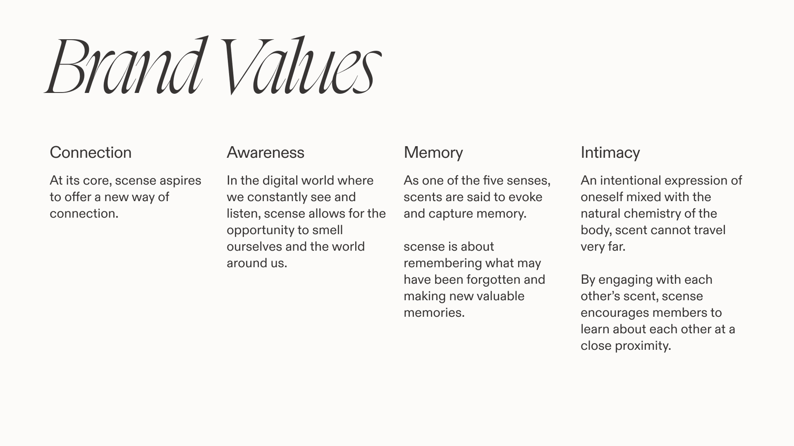
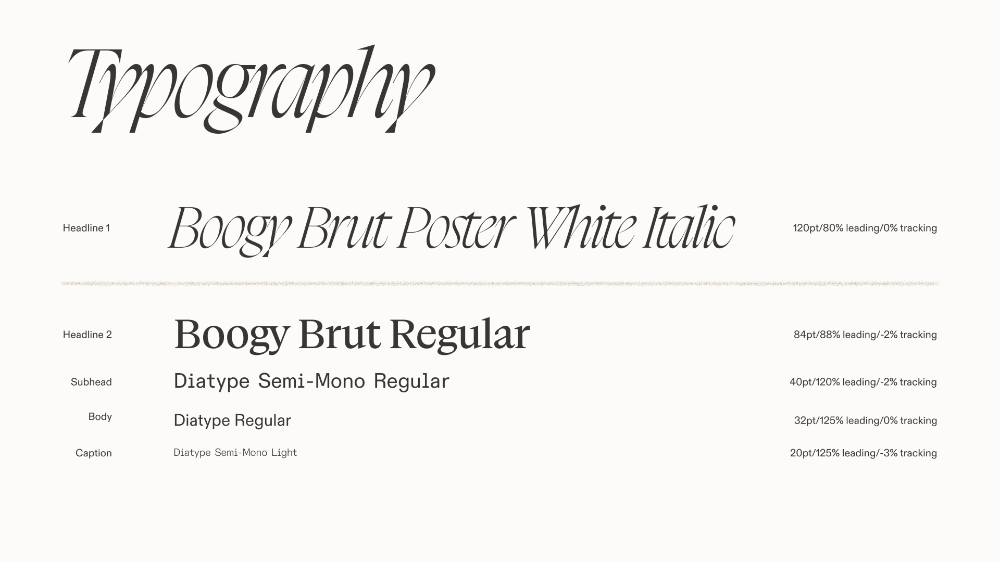
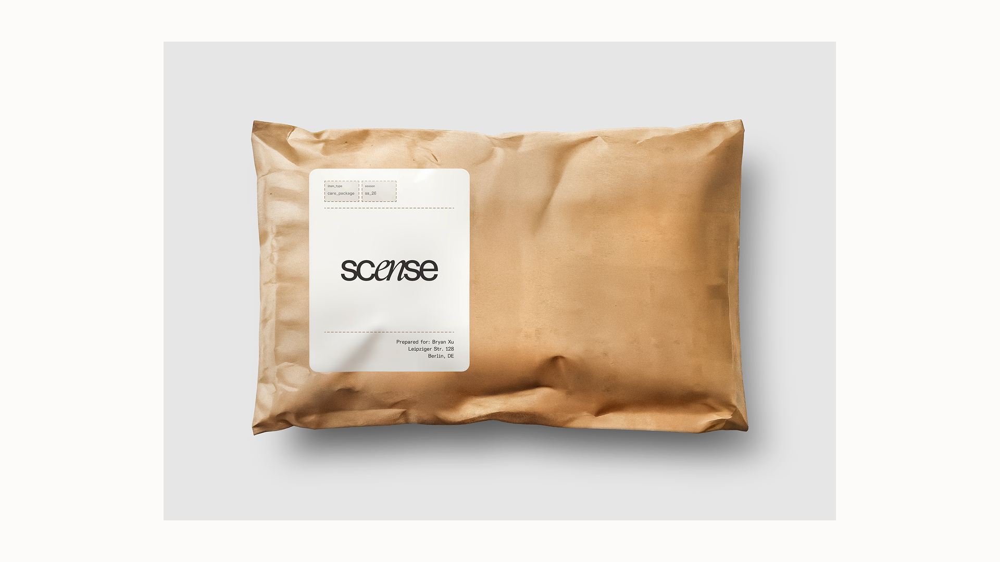
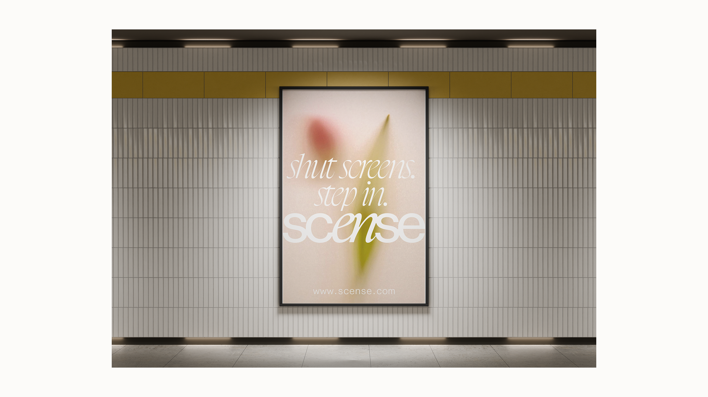

Created for my Hybrid Visual Identities class, the project responds to a brief to develop an immaterial brand.
My partner Ajin Jeong and I positioned scense as a cultural and social brand rather than simply a perfume club: a speculative community built around scent-based experiences for people interested in fragrance, self-expression, and offline closeness as a more intentional form of social connection.







